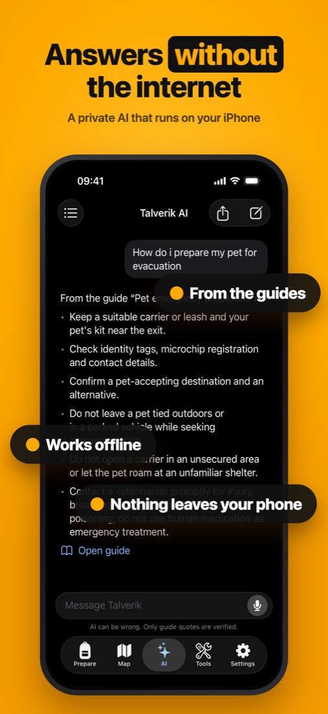
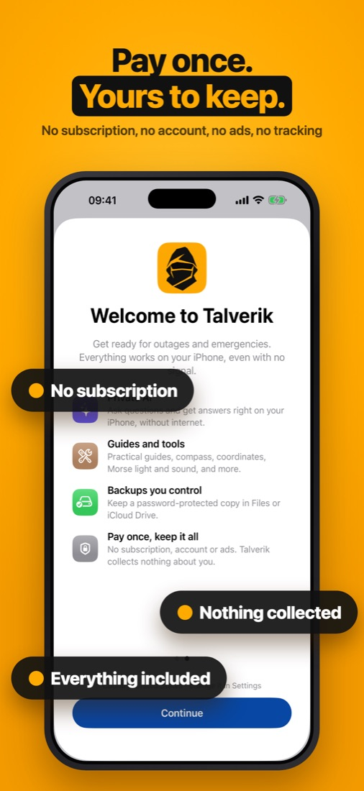

Talverik is not an emergency service. In an emergency, call your local emergency number. Guides and AI answers are general information, not professional advice. Maps are for orientation, not turn-by-turn navigation or complete hazard coverage. Requires iOS 26 or later.

All your kits in one place
Start from a ready-made go bag, home, car or first-aid kit, or build your own. Phone readiness checks the iPhone settings that matter in an emergency.

Know what’s packed and what expires
Check off what you have, track amounts and see what is missing. Add expiry dates to food, water and batteries, and Talverik reminds you before they run out.

Maps that work with no signal
Download a detailed map of your region in advance. Save places, record GPS tracks and follow them back. Tsunami zones are shown where coverage is provided.

Your papers, locked and ready
Scan your ID, insurance and prescriptions with the camera, or import PDFs and images. Lock them with Face ID; their text is searchable.

Answers without the internet
Ask questions and get answers right on your iPhone, after a one-time download of about 1.5 GB on a compatible iPhone. It answers from the guides when one fits. AI can make mistakes.

Know what to do when it happens
Practical guides for preparing, emergencies, the outdoors, personal safety and living without services, plus a compass, coordinates and Morse light and sound.

Pay once. Yours to keep.
No subscription, no account, no ads. Talverik collects nothing about you. Back up to Files or iCloud Drive with an optional password.